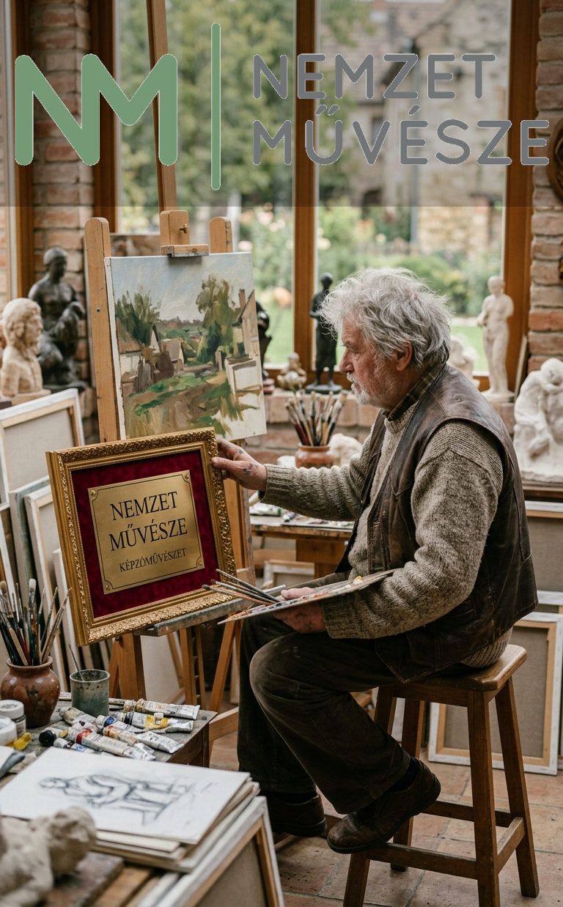
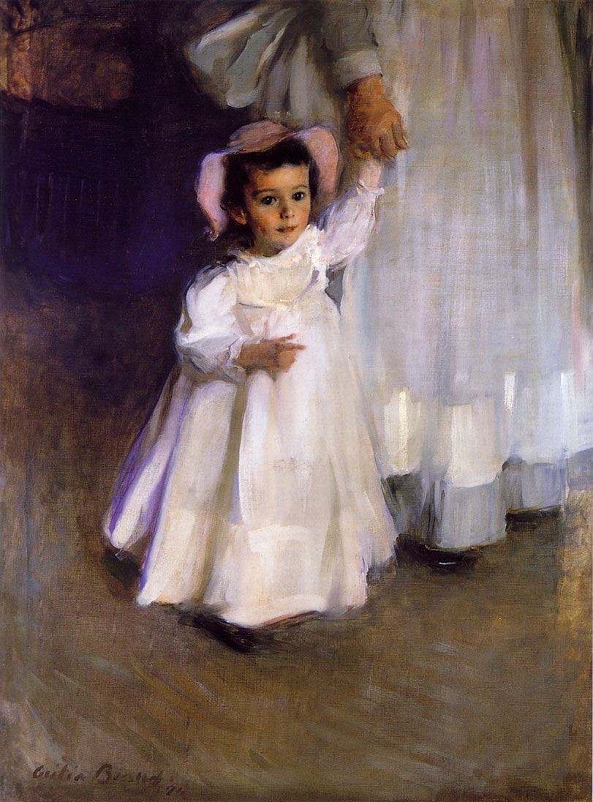
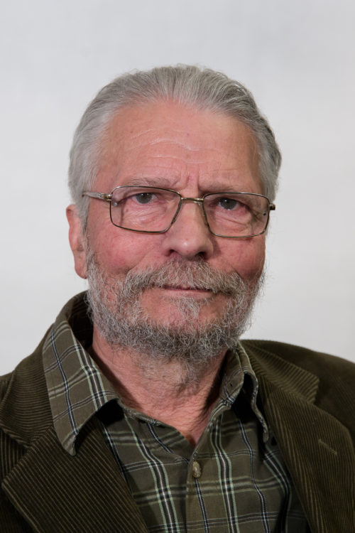
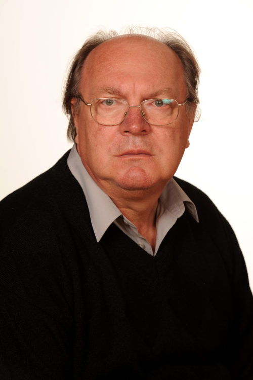
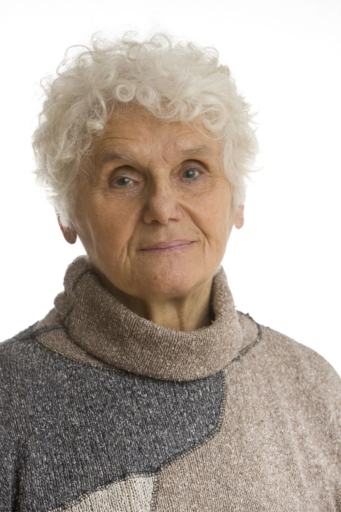
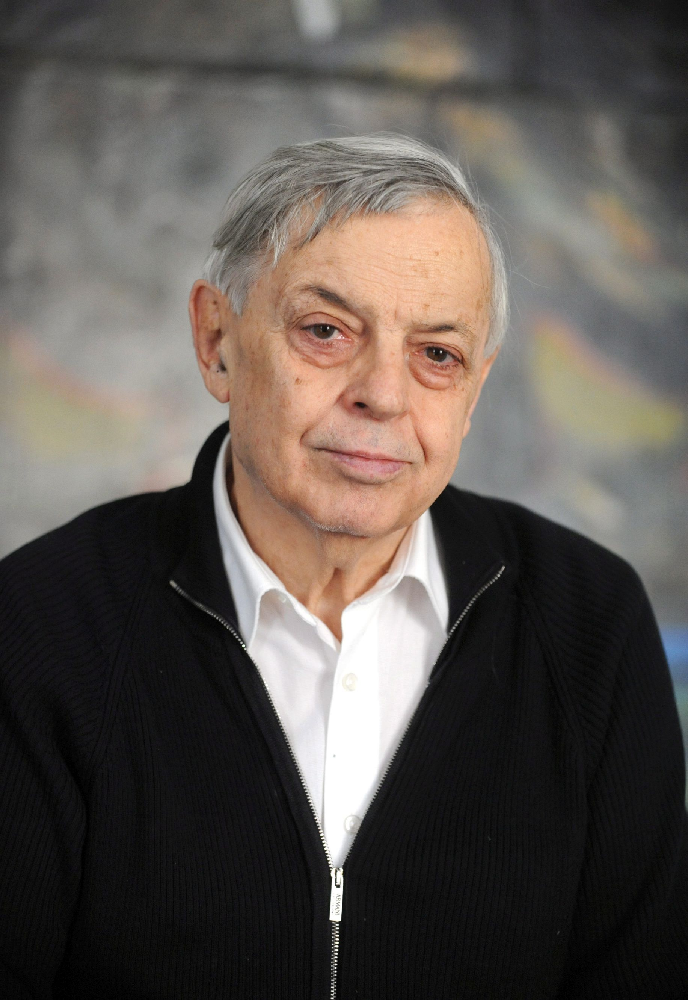
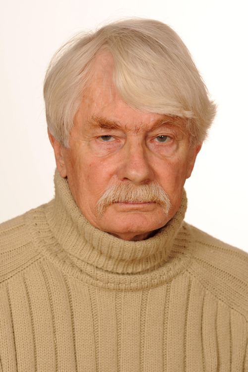
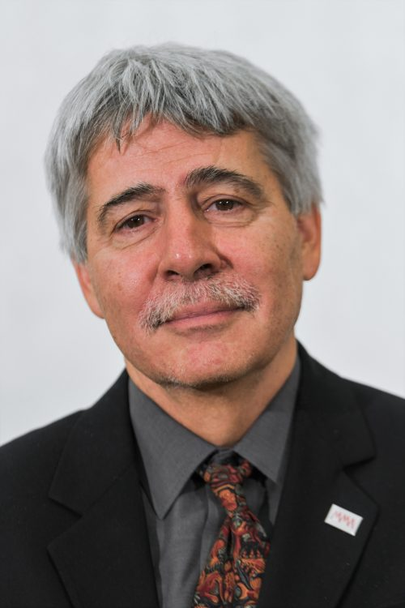

A képzőművészet fogalma mindazon művészeti ágakat felöleli, melyek eredményét nézni, látni lehet és célja nem valamely konkrét használati funkció kiszolgálása. A képzőművész szemléletének lényege, hogy gondolatai megfogalmazására autonóm műalkotás létrehozása céljával dolgozik. Nem fontos számára művének „használhatósága”.
A korszerű iparművészet és képzőművészet határa összemosódik, mivel az iparművészet számos területén egyre több esetben találhatunk olyan autonóm alkotásokat, melyek a használati tárgyaktól elvonatkoztatott műtárgyak. Használati tárgyként funkciójukat vesztették. A képzőművészet területén is megjelennek az akár ipari sorozatgyártásból ismert használati tárgyak képzőművészeti alkotássá „átalakított” darabjai. Ezt a módszert Man Ray, Marcel Duchamp munkásságában fedezhetjük fel először. Utóbbi nevéhez fűződik a Ready-made műfajának megteremtése. Természetesen a klasszikus képzőművészetnek is van kifejezetten használati célú vonulata, például a portréfestészet, melynek jelentősége és megjelenési formája a fotográfia felfedezésével átalakult, de napjainkig tovább él. A fotóművészet műfaján belül is megtalálható a kettősség. Az iparművészeti szemléletű, azaz alkalmazott fotográfiát leginkább magazinokból, reklámokból ismerhetjük, de vannak képzőművészeti szellemiséggel készült alkotások, melyeket leginkább a kiállítótermekben, könyvekben láthatunk. A grafika műfaján belül szintén jól követhető a képzőművészeti szellemű alkotások megléte, és az elsősorban használati funkciót betöltő iparművészeti szellemiségű alkotások, más szóval, alkalmazott grafikai művek (embléma, logó, reklámfelirat stb).
A testfestés és mozdulatszínház, az interaktív képzőművészet vagy a filmművészet, a performance szintén olyan művészeti területek, amelyek alkalmazzák a képzőművészet eszközeit, és viszont. A képzőművészet és az iparművészet szorosan kapcsolódik egymáshoz, és gyakran nehezen határolhatóak el. Az előadó-művészetet általában nem soroljuk a képzőművészethez, de itt sincs éles határ.
Szülei: Bisztrai Farkas Ferenc politikus és F. Györffy Anna grafikusművész. Testvére: Farkas Ferenc (agrármérnök). Az apai nagyapja bisztrai Farkas Hermann, valamint fivérei Farkas Márton, Farkas Imre, Farkas Samu, valamint Farkas Alfréd 1910. október 5-én magyar nemességet szereztek adományban, valamint családi címert, és a "bisztrai" nemesi előnevet I. Ferenc József magyar királytól.
1961–1964 között a budapesti Képző- és Iparművészeti Gimnázium kerámia szakán, érettségi után a Magyar Képzőművészeti Főiskola szobrász szakán tanult (1964–1968), ahol Mikus Sándor volt a mestere. 1968–69-ben kijutott Párizsba, ahol az Écoles des Beaux-Arts szabad hallgatója lett. 1985–1990 között országgyűlési pótképviselőként működött.
1990-től a Magyar Képzőművészeti Egyetem tanára (1990-ben még Magyar Képzőművészeti Főiskola), 1992-től a szobrász tanszék vezetője, egyetemi tanár. 2002 és 2005 közt a Magyar Képzőművészeti Egyetem rektoraként működött.
A szentendrei Grafikai Műhely alapító tagja és első elnöke volt, a szentendrei Art’éria Galériának is alapítói közé tartozik. A Szimpozionok és Alkotótelepek Társaságának egyik vezetője, az AIAP (UNESCO) magyar nemzeti bizottságának irányítója. A Szentendre Művészetéért Alapítvány (MűvészetMalom) kuratóriumának elnöke. A brit királyi szobrásztársaság tagja (FRBS).
A 20. század második felében uralkodó stílusirányzatok hatása alatt alkotott, végigjárta az utat a figurálistól az absztrakt stílusig. A közösségi érzés kifejezője számos köztéri alkotásában, még a fogyatékossággal élőkre is gondolt: a budai panorámát ábrázoló, tapintható Braille-írásos szobrát helyezték el Budapesten a Duna-korzón, az egri Dobó István téren pedig szintén Braille-írásos, bronzból készült városmakettja volt látható illetve gyengén látók vagy vakok számára tapintható, míg a tér átépítése okán el nem vitték onnan.
Tapintható városplasztika vakok, gyengén látók és látók számára, felállítva 2005. A tér 2014–15-ös átépítése során eltávolították a térről
Számos kisplasztikáját jeles közgyűjtemények őrzik.
Wikipédia, a szabad enciklopédia
Főiskolai tanulmányait az Egri Tanárképző Főiskola matematika–rajz szakán végezte Blaskó János, Seres János, Nagy Ernő tanítványaként 1968-1972 között, főiskolai tanulmányainak befejezésére a budapesti Képzőművészeti Főiskolán került sor.
1972-1992 között szülőfalujában, 1995–től 2009. évi nyugdíjba vonulásáig az Eszterházy Károly Főiskolán tanított.
Alkotásaival 1974 óta szerepel kiállításokon. Számos tanulmányt is írt, amelyek elsősorban a gyermekrajzok világáról szólnak. Sajátos mitológiája, amely ecsetjét irányítja, a népmesék, a néphagyományok világából származik, ihletője a gyermekrajzok őszintesége és tisztasága is, ez utóbbi kapcsán rokon Kasza Imre művészetfelfogásával. Alkotói stílusa nem kötődik hagyományosan egy iskolához, egyediség jellemzi.
Ihletének fő forrása saját szülőfaluja, Somoskőújfalu, jellemző nála a népművészeti hagyományok újraértelmezése. A gyermekrajzok és a „neoprimitív festészet” mesterkéletlen, kozmikus világlátását követi. Alkotásai mögött ott lüktet az egész 20. századi avantgárd és neoavantgárd, Jackson Pollock, Hans Hartung expresszivitása, lírai absztraciói, a szentendrei szürrealisták, (Vajda Lajos, Ámos Imre) szuggesztiója. Sokáig a növényeket, majd az állatokat foglalta képekbe. A látványperspektíva mellőzése az egyiptomi művészetre emlékeztet.
Wikipédia, a szabad enciklopédia
Édesapja 1945–1947 között vármegyei alispán volt. 1946 és 1950 között a pécsi Képzőművészeti Szabadlíceumban, majd 1950 és 1952 között a Képző- és Iparművészeti Gimnáziumban tanult. 1952-ben felvették a Képzőművészeti Főiskolára, ahol 1958-ban végzett festő szakon, de a freskó szakon is tanult. Az első három évben Bencze László, azután Szőnyi István volt a tanára, ám ő Martyn Ferencet tartja igazi mesterének, aki már 1945-től foglalkozott vele Pécsett.
1960-tól könyvillusztrációkat készített a Szépirodalmi és a Móra Ferenc Kiadó számára. Díszlet- és jelmeztervezéssel is foglalkozott (1967–1976) a Nemzeti Színház, a Katona József Színház, az Ódry Színpad, az Operaház, a kaposvári Csiky Gergely, a kecskeméti Katona József és a Marosvásárhelyi Magyar Színház előadásaihoz. 1983-tól rajzot és festészetet tanított Pécsett, a Pécsi Tudományegyetemen (1991-től egyetemi tanár, 2003-tól professor emerita). 2003 és 2008 között Színerő címmel doktoranduszok részére többhetes festészeti kurzusokat és kiállításokat szervezett nagyméretű művek készítésére és bemutatására a pécsi Zsolnay Kulturális Negyed területén. Ő a Pécsi Képzőművészeti Mesteriskola egyik alapítója.[5] Külföldön is volt vendégprofesszor: 1985-ben az École des Beaux Arts (Cergy-Pontoise), 1998-ban a University of Hertfordshire látta vendégül. Pályafutása alatt számos külföldi tanulmányúton vett részt Lengyelországtól az Amerikai Egyesült Államokig.
1963-ban olasz állami ösztöndíjjal részt vett a római Accademia di Belle Arti szabad kurzusán. 1984-ben Munkácsy Mihály-díjat kapott, 1989-ben érdemes művész lett, majd 1996-ban megkapta a Magyar Köztársasági Érdemrend tisztikeresztjét. 1993-ban tagja lett a Széchenyi Irodalmi és Művészeti Akadémiának. 2000-ben Kossuth-díj kitüntetésben részesült.
A budapesti Képzőművészeti Gimnáziumba járt, ahol Viski Balás László volt a mestere. 1954-ben, az érettségi után a Magyar Képzőművészeti Főiskolán folytatta tanulmányait, itt Pap Gyula és Bernáth Aurél voltak a mesterei. 1958 óta kiállító művész itthon és külföldön. Első tanulmányútja Olaszországba vezetett 1963-ban. 1964-ben megtekintette a velencei biennálét, ahol Robert Rauschenberg művei gyakoroltak rá mély benyomást.
1965-ben Bécsben járt tanulmányúton, 1968-ban az esseni Folkwang Museum egy hónapos ösztöndíjával az NSZK-ban és Svájcban tanulmányozta a képzőművészeteket. 1968-69-ben az Iparterv mindkét tárlatán kiállító művész volt, a hazai neoavantgárdok közt találta meg a helyét. 1972-ben négy hónapot töltött Essenben, ahol a Folkwang Museum vendégházában festett. 1974-ben a berlini DAAD Künstler-programjának ösztöndíját nyerte el, majd 1976-ban a brémai Paula Modersohn-Becker Alapítvány díjával végleg letelepedett az NSZK-ban, ahonnan kijutott New Yorkba 1980-81-ben, s ott is alkotott, s kiállított a PS1 galériában. Napjainkban is Németországban él. Háromszor szerepelt a Velencei Biennálé központi pavilonjában (1972, 1976, 1990), az 1977-es kasseli Documenta három részlegére is beválogatták műveit. Számtalan nemzetközi kiállításon mutatták be alkotásait.
A Képzőművészeti Főiskola hallgatójaként a szürnaturalista csoportban játszott szerepet, legjobb barátja Csernus Tibor volt. Itthon is, Németországban is az új képzőművészeti stílusokkal kísérletező kortársak köréhez csatlakozott. Kísérletező típusú alkotó, nem ragadt le egy témánál, egy stílus iránynál, egy fajta technikánál. Pályája kezdetén a hétköznapi élet tárgyait, motívumait festette a szürrealizmus festői nyelvén. Illusztrációkból, kézírásokból, nyomtatott szövegekből, könyvekből merített ihletet és a történelemből, a hírekből, a való életből. (pl. Varrólányok Hitler beszédét hallgatják, 1960).
Az 1960-as évek közepének alkotásai nála a Rembrandt művészete iránti lelkesedést és a pop-art stílus jegyeit tükrözték. A vietnámi háborús élmények ihletik számos képét, s ennek hatására fordul a keleti kultúra felé, s tanulmányozza annak motívumait, melynek eredménye sokvariációjú rózsa-sorozata.Az 1967-ben két változatban is megfestett Danae c. képe már az 1970-es évek konceptualista stílusának előzménye.
Egyre inkább az európai és a sajátosan magyar történelmi témák foglalkoztatták. A hiperrealizmus lehetőségeit hasznosítva mutatta be iróniával, illusztrációk, fotók, filmkockák nyomán az Orosz forradalmár csoportot vagy a Ganz Mávag Petőfi Brigádját. Duchamp jegyzetei inspirálták, majd Paul Celan lírája, s a könyvek, s az egyik régi magyar nyelvemlék, a Halotti beszéd, a számok, s a kalligráfia egyre nagyobb szerepet kapott művészetében, s a motívumok (köztük rózsa, száj, betű, szám) és az anyagok végtelen sokaságával dolgozott, köztük ceruza, tus, szépia, pác, tempera, olaj, kályhacsőlakk, akril, assemblage, rajz, selyempapír.
A Halotti beszéd és Paul Celan ihlette műveit, Halálfúga sorozatát spontaneitás, a gesztusok fontossága és drámai expresszivitás jellemzi.
Wikipédia, a szabad enciklopédia
Polgári családban és környezetben, Rómában született, neveltetése során elsajátította a művészetek szeretetét és tiszteletét. Kisgyermekként családjával egy időre Berlinbe költöztek, majd Adolf Hitler hatalomra jutása miatt Magyarországon telepedtek le. Magyar a családban egyedül anyai nagyanyja volt. A budapesti, Stefánia úti lakásukkal szomszédságban Ligeti Miklós szobrász lakott, s ez is mély benyomást gyakorolt rá. A második világháború alatt és utána pár évig a család Iváncsán élt.
Budapesten a piaristák iskolájába járt. Apját, Melocco Jánost (1909. december 26 – 1951. február 22.), aki nyolc nyelven beszélő katolikus újságíró volt, 1947-től 1950-ig az Új Ember folyóirat segédszerkesztője volt, elfogták, s az 1950-ben tartott koncepciós perben halálra ítélték, s 1951. február 22-én akasztással kivégezték. Így az addigi békés családi háttér szétzilálódott. Anyagi gondokkal küszködve járt gimnáziumba, a tanulás mellett dolgozott, volt hómunkás, sírásó, segédmunkás. Háromszor jelentkezett a Képzőművészeti Főiskolára, az első két alkalommal származása miatt elutasították.
1955-ben vették fel a Főiskolára, mesterei kezdetben Gyenes Tamás és Mikus Sándor voltak. Az 1956-os forradalom alatt tudatosult benne végképp magyar identitása, amikor egy szovjet lövedék a lábán megsebesitette. Tanulmányait Varsóban folytatta volna, ám végül 1961-ben Kmetty János és Pátzay Pál mestereknél itthon végzett. Dolgozott a Fiatal Művészek Stúdiójában is (ahol a padon ülő Adyt alkotta). 1970-től a kecskeméti művésztelepen is élt családjával, majd a budapesti Dózsa György úti műteremben dolgozott. 1981-től Zsámbékon telepedtek le, azóta is ott él és alkot. 1990-től a Magyar Képzőművészeti Főiskola címzetes egyetemi tanára. 1992-től a Magyar Művészeti Akadémia tagja, 1995-től elnökségi tag.
A Magyar Iparművészeti Főiskola grafika szakán szerzett diplomát 1975-ben. A hetvenes évek második felében díszleteket tervezett, majd animációs filmeket kezdett készíteni a Pannónia Filmstúdióban, illetve a Kecskemétfilm műtermeiben.
Önálló grafikai lapjait, gyakran archaizáló formai elemek, művészettörténeti utalások, stílusidézetek, illetve játékos önreflexiók rokonítják a posztmodern irányzatokkal. Az olykor anakronisztikus hatású, régi korokat idéző látványvilág egyfajta szándékolt kívülállásra, az időben történő emigrációra is utal. Sok munkáján jelennek meg természettudományos, főképp a geometria és az optika köréből választott témák. Szívesen kísérletezik a téri illúziókeltés megjelenítésére kifejlesztett perspektivikus ábrázolás túlzásaival, valamint az anamorfózis technikájának megújításával, melynek során úgy torzít el képeket, hogy csak bizonyos nézőpontokból, illetve tükröződő felületek közbeiktatása révén kapjon értelmet a kép. A kettős jelentésű munkák, optikai illúziók, geometriai paradoxonok és anamorfózisok elméletével, történetével és filozófiájával is foglalkozik, több publikációja is megjelent ebben a témában. Autonóm művészeti tevékenysége mellett alkalmazott grafikával pályája kezdete óta foglalkozik. Munkáival rendszeresen részt vesz nemzetközi képzőművészeti tárlatokon, grafikai biennálékon, filmfesztiválokon és elméleti szimpóziumokon.
Tagjai közé választotta az Alliance Graphique Internationale, a Széchenyi Irodalmi és Művészeti Akadémia, valamint a Magyar Művészeti Akadémia.
2002-ben az Iparművészeti Egyetemen habilitált mesteri diplomát kapott. 2004 és 2014 közt a Nyugat-magyarországi Egyetem Alkalmazott Művészeti Intézetének tanára volt, nevéhez fűződik a Tervezőgrafikai Tanszék megalapítása.
Szépirodalommal is foglalkozik, több verses-, novellás- és esszékötet mellett Sakkparti a szigeten, illetve Páternoszter (regény) címmel regényei is megjelentek.
1984 óta használja az Odüsszeiából kölcsönzött Utisz (ógörögül „οὔτις”, vagy „OYTIΣ” ) művésznevet is, amelyet előtte ugyancsak álnévként Odüsszeusz használt a küklopsz elleni affér alkalmából, mely köztudottan a szörny szemevilágába került. A jelképes, ironikus név értelmében Orosz művészete egyfajta támadás a szem ellen.
Figyelem! Ez az oldal MI által generált tartalomat használ.







